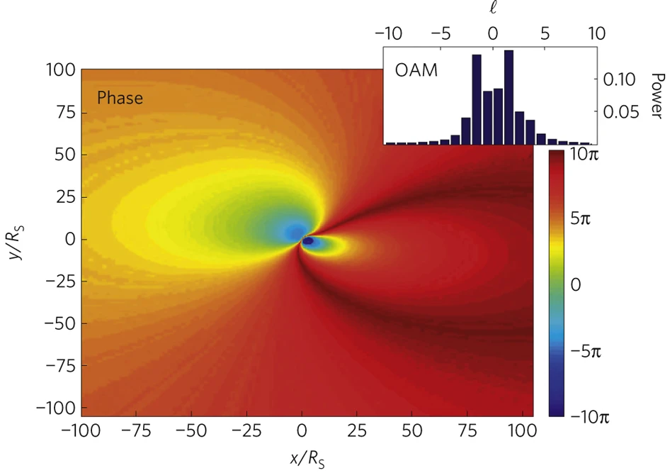

|
|
Black holes, formed by the collapse of massive stars, possess an effect on space time that stops even light from escaping it. Light passing it undergoes many phenomena such as, gravitational lensing, red/blue shift, time dilation and much more.
These interactions between black holes and light provide insight to physicists about how black holes affect the space around them and their properties such as mass. The purpose of this study is to analyse what exactly happens when light interacts with black holes and how that affects time and light itself.
To first understand this, you must understand that around a black hole the space time manifold warps due to a black hole's immense gravitational power (Hirvonen, 2024).
To properly understand this, visualize space as a trampoline - if a heavier object is on it, it sinks further in. This has been proven by using gravitational lensing which observes light warping effect around a heavy object in space. The amount of warping gives us insights into how heavy the object is and about dark matter which is not visible but still causes warping in space time. This is the basis to black holes’ effect on time (NASA Universe Web Team, 2024).
Light in its own perspective is not changing at all. However, to an observer many changes may occur if they are in motion or viewing something in motion.
Due to time dilation, light entering a black hole will, from an outsider’s perspective, appear to be entering at a slower speed due to relative movement – the relative velocity between light and observer affects the simultaneity of the occurrence (Zavisa, 1970).
For example, as a train is moving to the right, Observer A who resides inside the train is equidistant between two lights which flash simultaneously. Observer B, who resides outside the train, sees the flash on the right side of the train first, indicating to Observer B that the light on the right side is moving faster than the light on the left side. This is because, in relation to Observer B, light has a shorter distance to travel since Observer A is in the train which is moving in the direction of that light (Gibbs, 2013).
Therefore, when on a larger scale with greater distance, it takes longer, hence why there seems to be a time interval between the arrival of each flash. In contrast, Observer A sees both left and right lights flash at the same time due to their distance from her being equal in her reference frame. This is an example of the occurrence of relative velocity between light and observer (Ling, Sanny and Moebs,2024).
$$γ = {1 \over \sqrt{1-{v^2 \over c^2}}}.$$
The Lorentz factor (given by γ) is the relativistic factor where the greater the velocity of the object the greater the Lorentz factor and therefore the greater the dilation of time.
Time dilation is the phenomenon where due to the curvature of space (referenced in intro) time moves slower around heavy objects in space (Eiley, 2024). This occurs because light has a longer distance therefore it must travel to get around a curve.
This means that as light passes a black hole it will take longer to reach the observer. However, it is important to remember the speed of light cannot change in relation to itself. To an outsider's view light does. Time dilation only appears in an observer's perspective.
Blue and Red shifts are changes that occur to light when we are observing it. They are the change in frequency as something gets further away or closer (Howell and Dobrijevic, 2023). When it is getting closer the light shifts towards blue and as it gets further the light shifts to red.
It is important to note that this change only happens when observing it and that the frequency of light is absolute. This could also occur due to obstructions as it arrives to the observer, such as waves, particles, plasma, dust, gaseous, fluids, solids; however, they are more apparent due to the doppler effect.
When light enters a black hole's orbit, if we are observing one single photon, as it spins round, we would see it changing colours from red to blue and back to red. This rate of change between the colours can allow us to measure the rotational speed of the black hole.
$$v' = v{(1- {GM \over rc^2})}.$$
As this shows the closer an object is to a greater mass of an object the greater the redshift (v’) is (Nakra,2020) . However, this is for a static black hole only which does not exist in the real world. For a rotational black hole, it gets more complicated.
Total phase variation of light generated in a region of size 100RS×100RS in the equatorial xy plane of a quasi-extremal rotating black hole (a=0.99) as seen by an asymptotic observer
Tamburini, F., Thidé, B., Molina-Terriza, G. et al. Twisting of light around rotating black holes. Nature Phys 7, 195–197 (2011).
A black hole is a region where spacetime is so curved that every path which could take eventually leads back inside the black hole. However, there is a reason black holes are still lit up.
Their accretion disks are the reason they are visible to the human eye. These disks are formed due to gas nearby spinning around at such fast speeds that they heat up due to friction giving off light (Nasa Universe Web Team, 2024).
The accretion disk is the last point where matter can be seen, this point is called the Schwarzschild radius. Anything that crosses this point will go into the black hole and will not be able to be seen by us. To us it will look like the object has stopped midway due to its light being able to escape the pull of the black hole.
$$R = {2GM \over c^2}$$
Black holes affect light in many ways, some of which are not visible to the human eye and some of which are. It is a field in which people do not know much about due to its ability to break the laws of the universe. Light is a phenomenon which we still have not understood, for example whether it is a particle or a wave, and with all of these different unknowns it is exceedingly difficult to understand black holes.
this is a dummy text to try